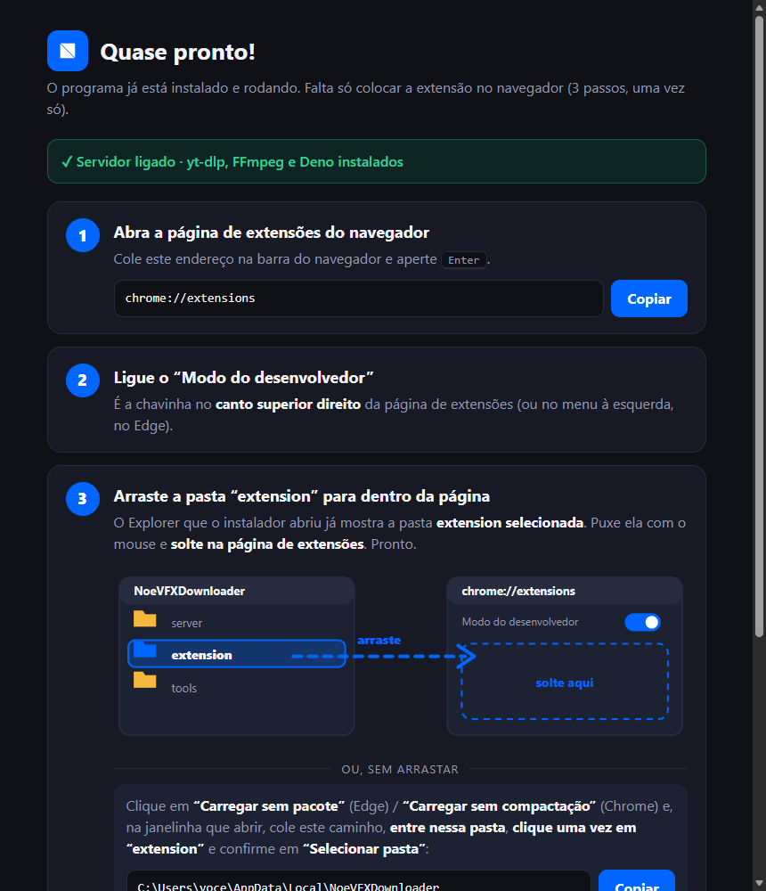

Da instalação ao primeiro vídeo.
Escolha sua edição, instale o aplicativo local e conecte o navegador. Depois, abra seu projeto para experimentar o fluxo Adobe.
1. Escolha a edição certa.
| Você quer… | Escolha |
|---|---|
| Salvar vídeos na sua pasta pelo navegador. | Noe VFX Downloader · NoeVFX-Downloader-3.2.1.zip |
| Enviar do navegador ao projeto e colar links no painel Adobe. | Noe VFX Downloader for Editors · NoeVFX-Downloader-for-Editors-3.2.1.zip |
As edições compartilham o mesmo aplicativo local. Instalar uma substitui a outra. O painel Adobe está disponível na edição for Editors para Windows e macOS.
Abrir downloads no GitHub ↗Confira o número da versão na release, no nome do ZIP e no VERSION.txt. Este manual já descreve a 3.2.1; alguns avisos novos só estarão nos pacotes dessa versão.
2. Extraia o ZIP inteiro.
Use “Extrair tudo” e abra a pasta do seu sistema. Não execute o instalador de dentro do ZIP. Precisa de internet para obter as ferramentas; o tempo varia com a conexão. A instalação padrão é por usuário e não exige senha de administrador.
| Sistema | Arquivo para abrir |
|---|---|
| Windows | windows/INSTALAR_NOEVFX.bat |
| macOS | mac/INSTALAR-MAC.command · botão direito → Abrir na primeira vez. Alternativa: bash instalar-noevfx.sh |
| Linux | No terminal, dentro de linux: bash instalar-noevfx.sh |
O instalador verifica Python, yt-dlp, FFmpeg e Deno, copia o app e inicia o servidor local. Na edição for Editors, instala o painel Adobe nos sistemas compatíveis. Na 3.2.1, a janela também informa a instalação e a ativação do painel. Leia eventuais avisos antes de fechá-la.
macOS e Linux não foram validados em máquinas físicas nesta rodada; os painéis Adobe foram vistos funcionando no Windows.
3. Coloque a extensão no seu navegador Chromium.
Use Chrome, Edge, Brave, Opera ou Vivaldi. O fluxo abaixo usa o Edge como exemplo; a opção para carregar uma extensão sem pacote pode ter outro nome no seu navegador. Firefox e Safari não usam esta extensão.
- Ao terminar, o instalador abre um guia e a pasta instalada no Explorer.
- Abra a página de extensões:
edge://extensionsno Edge ouchrome://extensionsno Chrome. Nos demais navegadores Chromium, use o gerenciador de extensões do próprio navegador. - Ligue Modo do desenvolvedor.
- Use Carregar sem pacote e selecione a pasta
extensionda instalação. Você também pode arrastá-la do Explorer para a página de extensões. - No menu de extensões do navegador, deixe o Downloader visível na barra para encontrá-lo facilmente.

%LOCALAPPDATA%/NoeVFXDownloader/extension. Evite carregar a pasta extraída do ZIP: o atualizador modifica a instalação, e o navegador pode continuar lendo a cópia antiga.4. Confira se ficou pronto.
- Abra o popup do Downloader. O selo deve indicar Online.
- Escolha a pasta onde deseja salvar os vídeos.
- Abra uma página com vídeo, dê play e passe o mouse sobre o player.
- O botão azul do Downloader deve aparecer. Clique e escolha uma qualidade.
Para experimentar a integração Adobe, reinicie o Premiere ou After Effects depois da instalação. Abra e salve um projeto, procure Janela → Extensões → Noe VFX Downloader for Editors e confira se o projeto foi reconhecido. A disponibilidade do painel depende de a versão do programa oferecer suporte a CEP.